Una chica fuera de serie
Un joven ambicioso y ordenado que tiene su vida perfectamente planeada. Su rutina cambia drásticamente cuando conoce a Jordan Roark, una chica hermosa pero impredecible, volátil y "fuera de serie"
Puedes verla en:Las películas que te recomiendo
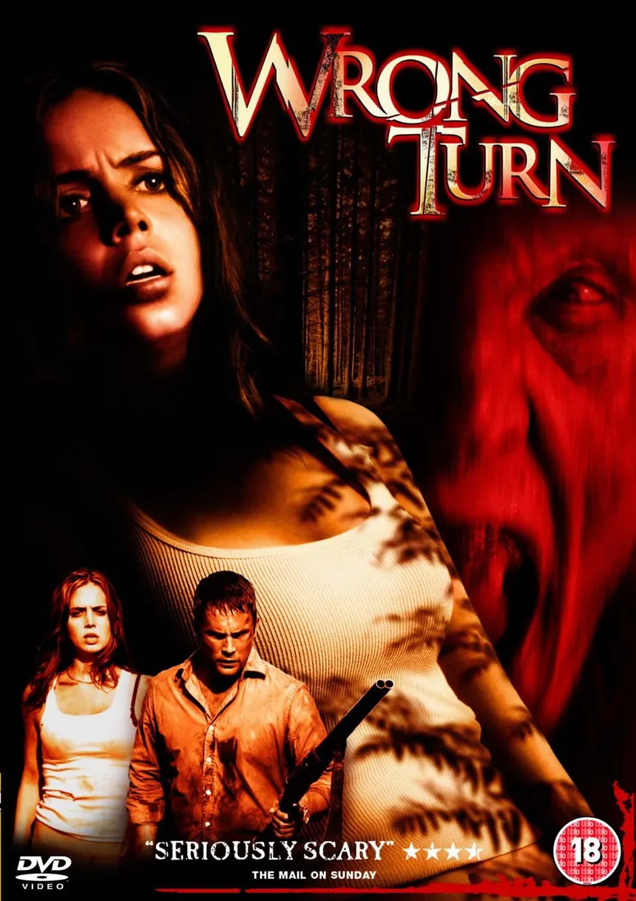
La premisa original sigue a grupos de jóvenes que,debido a accidentes o malas decisiones, terminan perdidos en los bosques de Virginia Occidental. Allí son cazados por familias de caníbales deformes y endogámicos, quienes utilizan trampas primitivas y violencia extrema para capturar a sus víctimas.
Puedes verla en: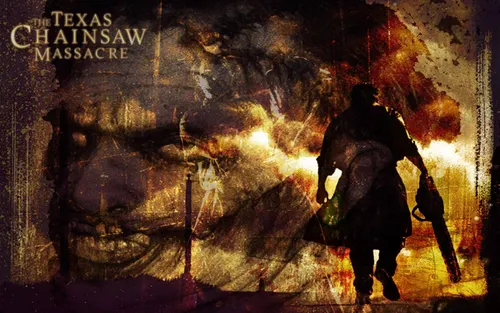
La trama sigue a un grupo de cinco jóvenes que, en su viaje por el campo de Texas, se ven perseguidos y amenazados por una familia caníbal psicópata, liderada por el icónico villano Leatherface (interpretado por Gunnar Hansen), quien utiliza una máscara hecha de piel humana y una motosierra.
Puedes verla en: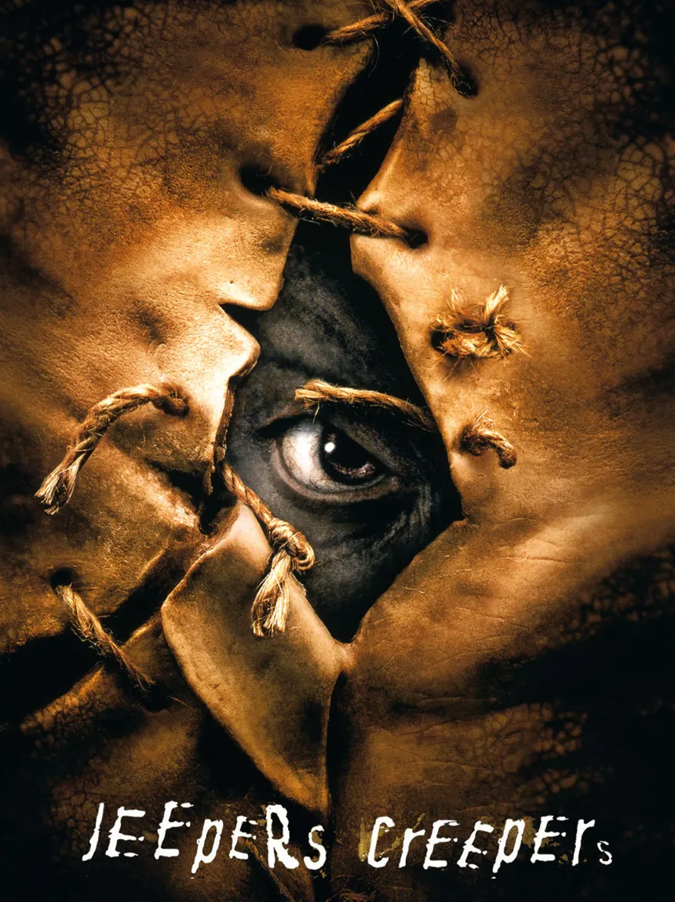
Jeepers Creepers es una película de terror de 2001 escrita y dirigida por Victor Salva. Producida por Francis Ford Coppola, la trama sigue a los hermanos Trish (Gina Philips) y Darry (Justin Long), quienes son perseguidos por una criatura demoníaca conocida como The Creeper mientras viajan por una carretera solitaria en Florida>
Puedes verla en: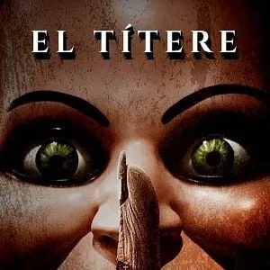
La trama sigue a Jamie Ashen, quien regresa a su pueblo natal, Ravens Fair, tras el asesinato brutal de su esposa, Lisa, quien aparece sin lengua. Allí descubre la oscura leyenda urbana sobre Mary Shaw, una ventrílocua del siglo XIX linchada por el pueblo, cuyo espíritu parece vengarse a través de sus 101 muñecos, bajo la regla de que "nunca debes gritar si la ves".2007
Puedes verla en: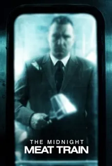
Película de terror y gore dirigida por Ryuhei Kitamura. La trama sigue a Leon Kauffman, un fotógrafo obsesionado con capturar la oscuridad humana, quien investiga a un asesino en serie conocido como Mahogany que mata y descuartiza a los pasajeros en el metro de Nueva York.2008
Puedes verla en: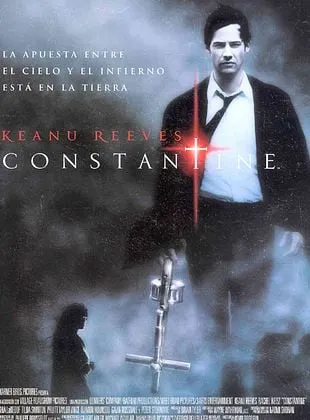
Nacido con la capacidad no deseada de ver a los ángeles y demonios híbridos que caminan entre los humanos, Constantine busca la salvación enviando a los esbirros de Lucifer de vuelta al averno
Puedes verla en: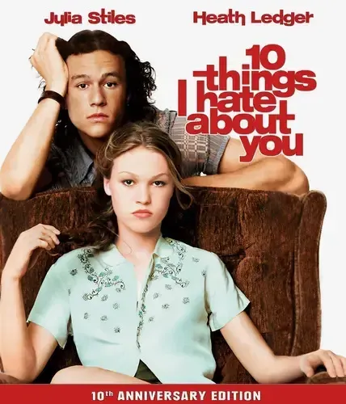
La trama sigue a las hermanas Bianca y Kat Stratford. Bianca, la hermana menor, es popular y quiere salir con chicos, pero su padre estricto prohíbe que tenga citas hasta que Kat, la hermana mayor y de mal genio, también tenga una
Puedes verla en: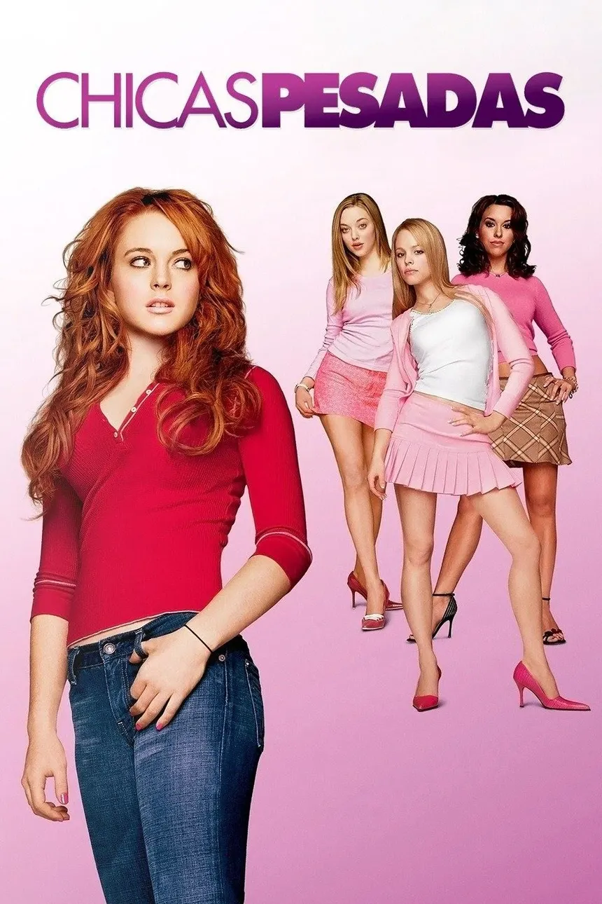
La trama sigue a Cady Heron, una joven de 15 años que creció en África siendo educada en casa por sus padres zoólogos. Al mudarse a Illinois, EE. UU., Cady debe enfrentarse a la "jungla" de una escuela pública estadounidense.
Puedes verla en: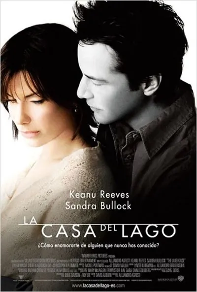
Dra. Kate Forster, quien en 2006 deja una misteriosa casa junto a un lago para mudarse a Chicago. Antes de irse, deja una nota en el buzón para el siguiente inquilino. Quien recoge la carta es Alex Wyler,que vive en la misma casa, pero en el año 2004.A través de cartas intercambiadas en el buzón, ambos descubren que están separados por dos años en el tiempo.
Puedes verla en: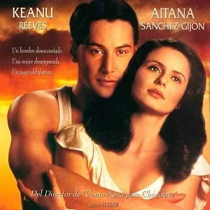
Un veterano de la Segunda Guerra Mundial que regresa a casa desilusionado de su matrimonio. En un autobús, conoce a Victoria Aragón,una joven embarazada y soltera que teme el rechazo de su familia,Paul acepta hacerse pasar por su esposo para ayudarla a enfrentar a su familia.
Puedes verla en:Un joven ambicioso y ordenado que tiene su vida perfectamente planeada. Su rutina cambia drásticamente cuando conoce a Jordan Roark, una chica hermosa pero impredecible, volátil y "fuera de serie"
Puedes verla en: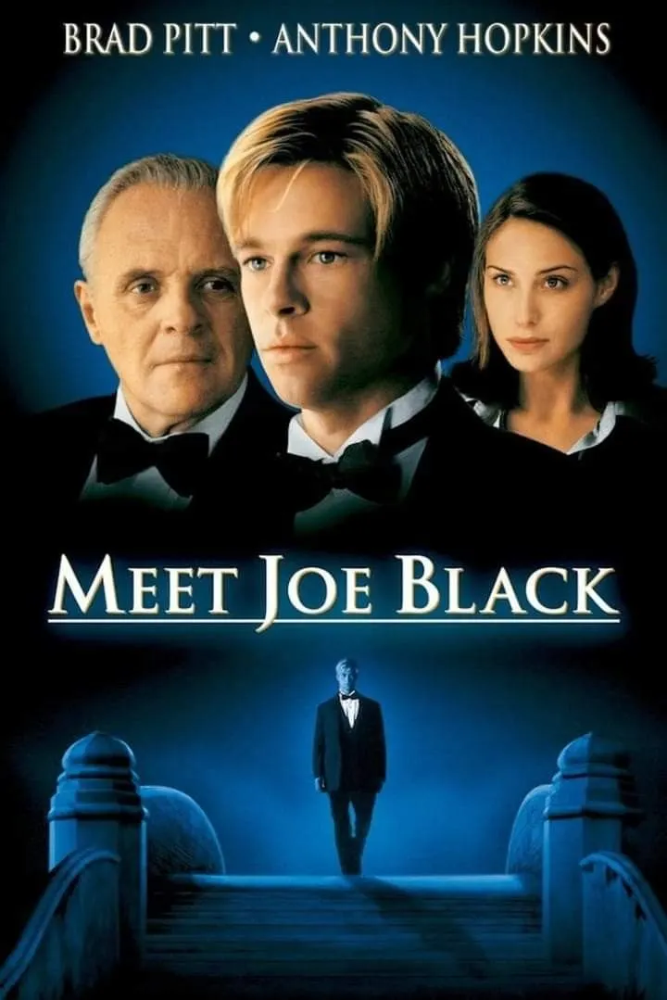
William Parrish, un poderoso y respetado magnate de los medios que, días antes de cumplir 65 años, recibe la visita de la Muerte. Esta se ha personificado en el cuerpo de un joven apuesto que falleció recientemente en una cafetería.
Puedes verla en: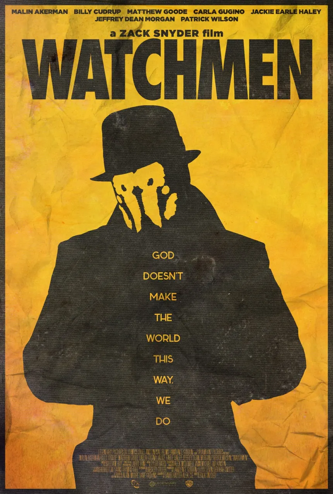
Adaptación del cómic de Alan Moore y Dave Gibbons tiene un tono oscuro, la exploración de la moralidad, la violencia gráfica y un mundo donde los "superhéroes" son personas reales con consecuencias reales.
Puedes verla en: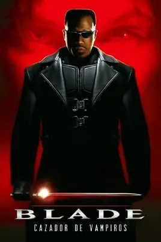
Blade un vampiro cazador de vampiros que es mitad humano, mitad criatura, con un sentido del humor ácido y una habilidad excepcional para el combate contra demonios y criaturas de la noche
Puedes verla en: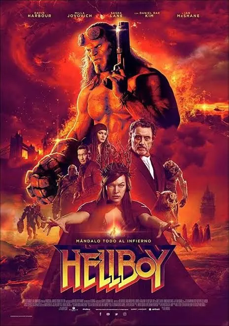
Un demonio criado por humanos que trabaja para el gobierno de EE. UU. protegiendo al mundo de amenazas sobrenaturales.
Puedes verla en: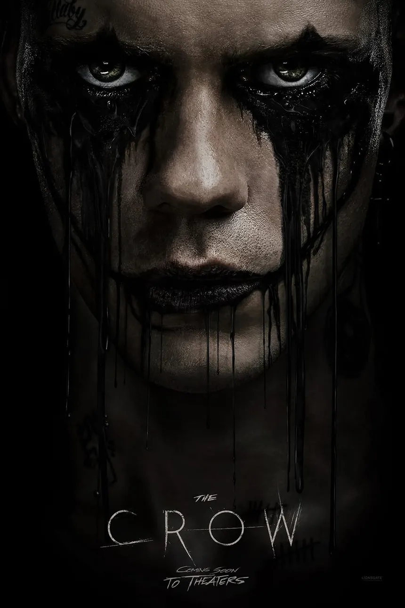
un músico resucitado por un cuervo para vengarse de los mafiosos que mataron a él y a su novia. Toca el tema de la muerte, el más allá, el dolor emocional y una estética visual muy estilizada y oscura.
Puedes verla en: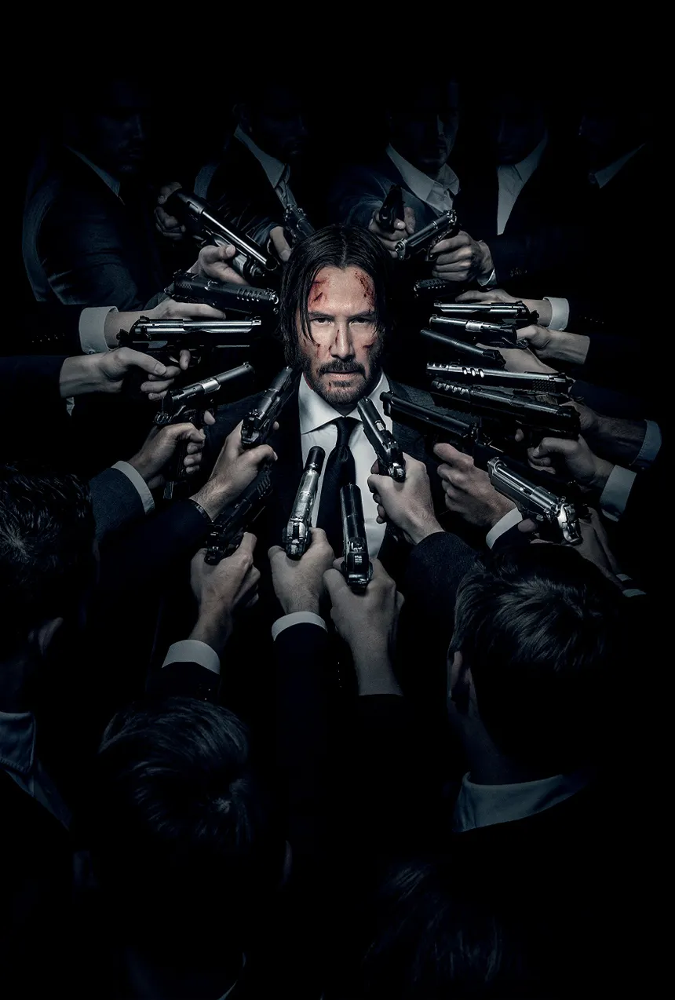
Un asesino retirado que es obligado a volver a la acción tras la muerte de su perro y el robo de su auto. Comparte el tono de "mundo oculto dentro del mundo real" y el protagonista con un pasado traumático
Puedes verla en: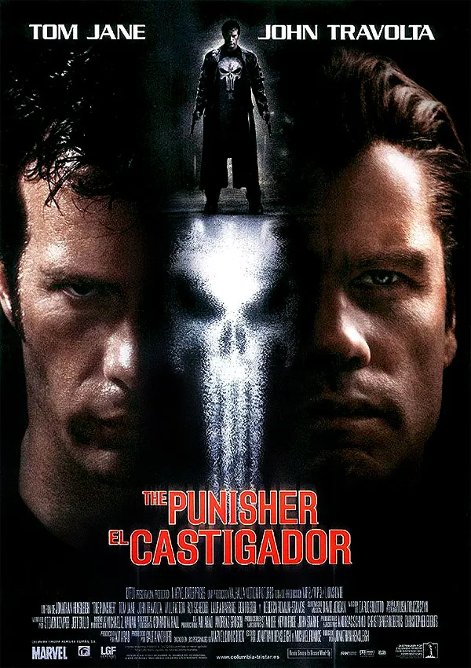
Un agente del FBI cuya familia es masacrada por un capo de la mafia como venganza. Sobreviviendo milagrosamente, Castle renace como El Castigador, un justiciero implacable que declara la guerra al crimen organizado utilizando tácticas letales.
Puedes verla en: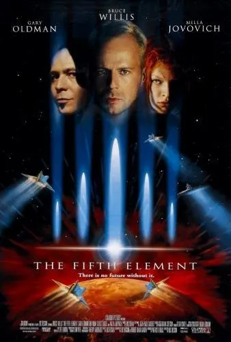
La trama se sitúa en el siglo XXIII (año 2263), donde una gran bola de fuego maligna se dirige hacia la Tierra para destruir la vida. La única esperanza reside en cinco piedras elementales y un "quinto elemento" humano perfecto
Puedes verla en: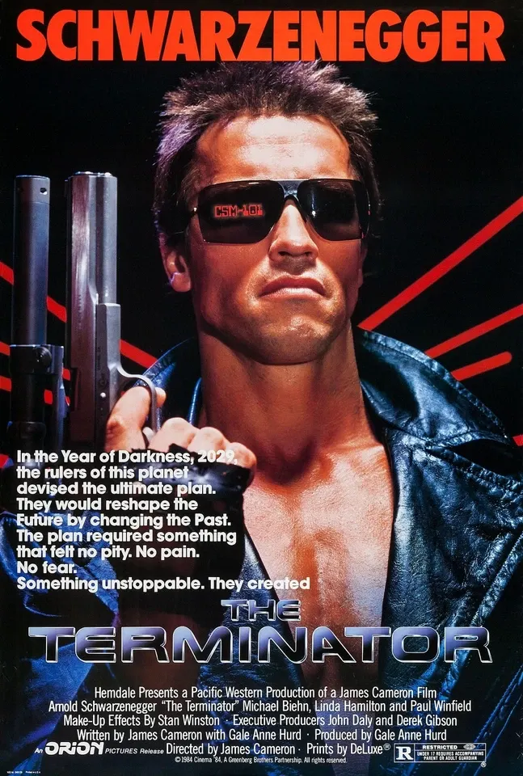
Sarah Connors y su hijo John, el futuro salvador de la humanidad, quienes son protegidos por Terminators reprogramados mientras luchan por evitar el "Juicio Final"
Puedes verla en: